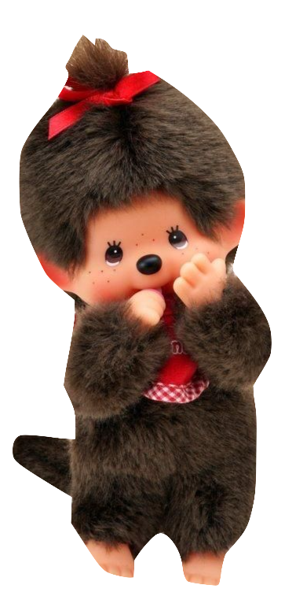

welcome to my corner of the internet
welcome to my corner of the internet
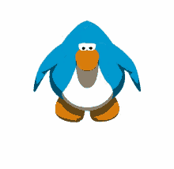
hi, i'm pari ✿
i'm fascinated by the intersection of art and technology. i love designing things that inspire me and bringing them to life in my little corner of the internet.
in my free time i think about the relationship between girlhood and the internet, research physical internet infrastructure, and read books with complex female main characters.
game design
a text-based, choose-your-own-adventure game modelled after the japanese otome games i grew up playing. this game exists as a playful, satirical ode to them.
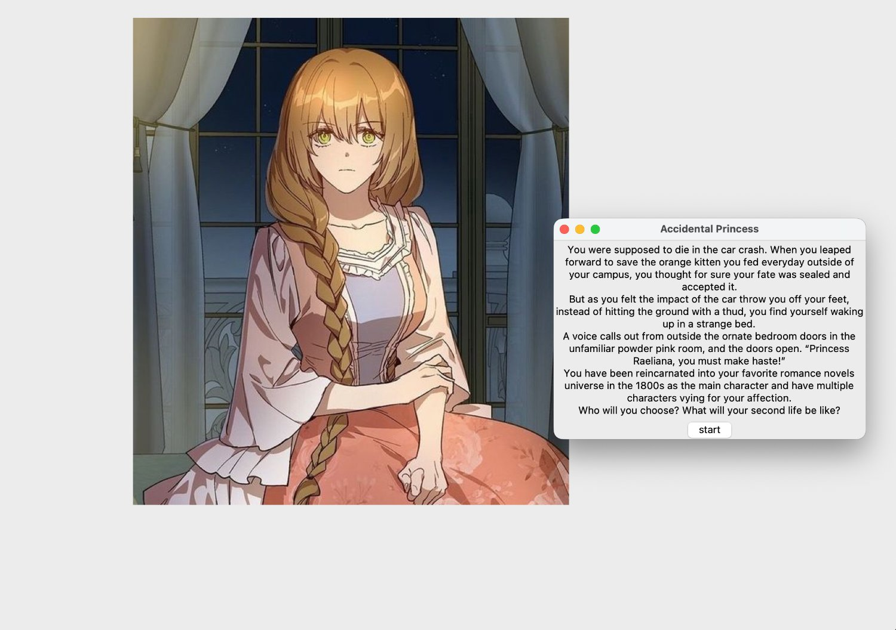
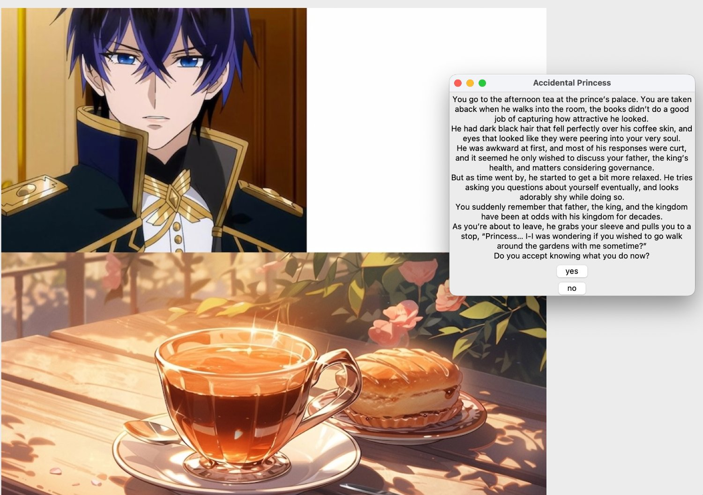
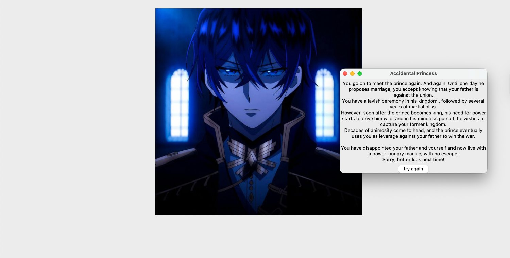
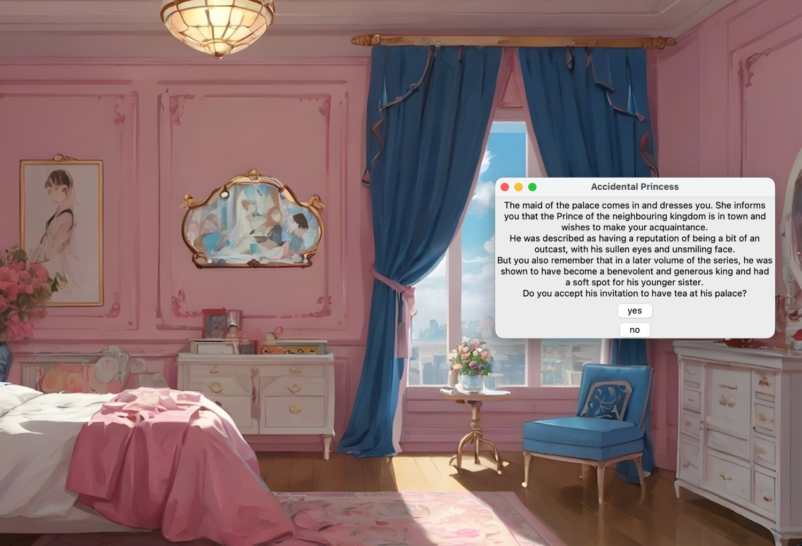
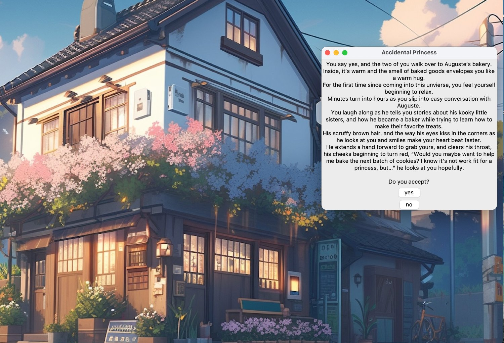
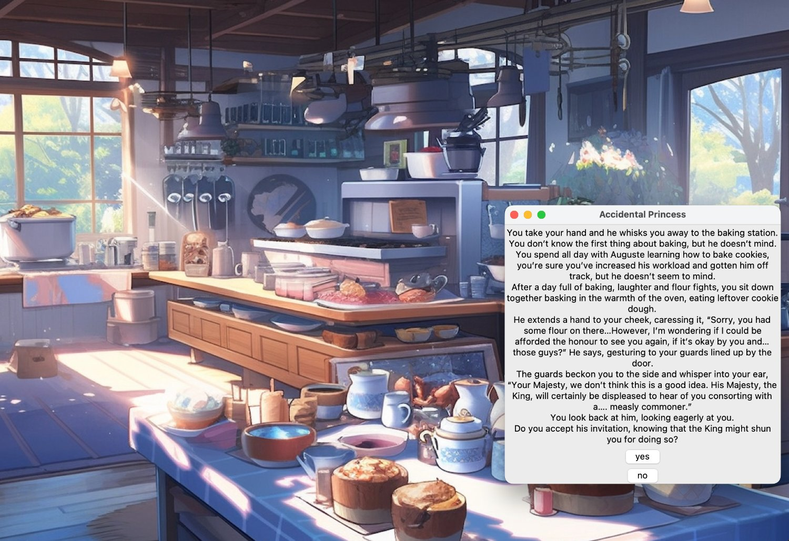
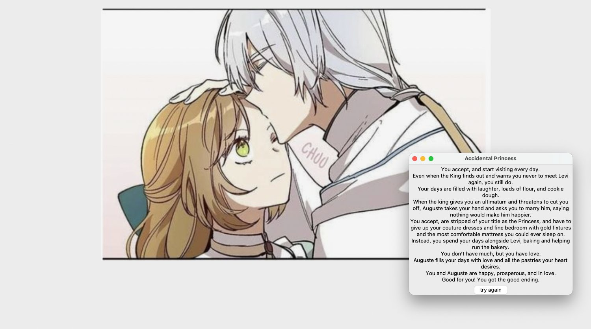
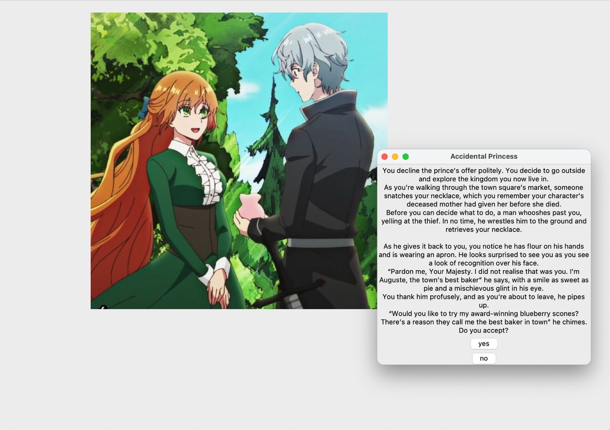
web design
association for the advancement of asians — during my internship i rebuilt the org's website from the ground up, and designed & built their accountability report card system: an objective, data-driven way to grade local candidates against the community's core pillars — public safety, public education & economic development.
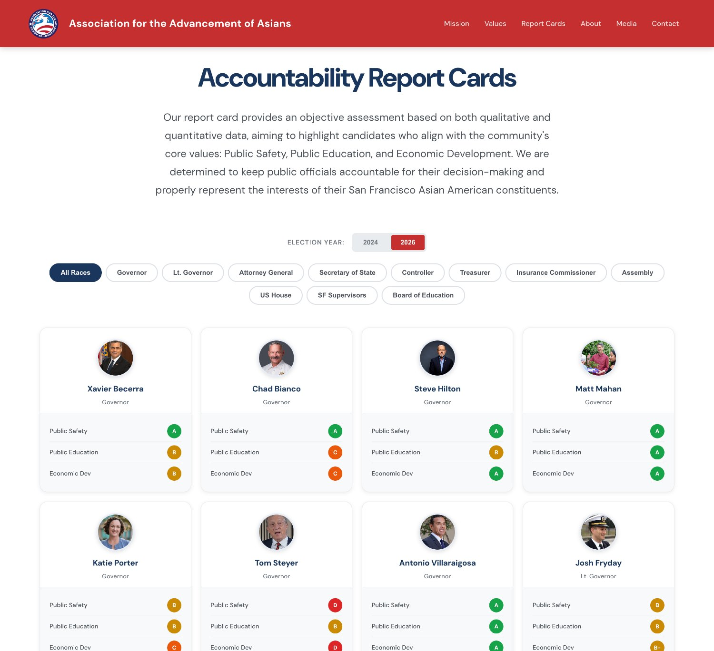
parimarwah.com — designed to capture the whimsy i felt accessing the internet on the family computer as a child. below: v1, and the v2 rebuild you're looking at now.
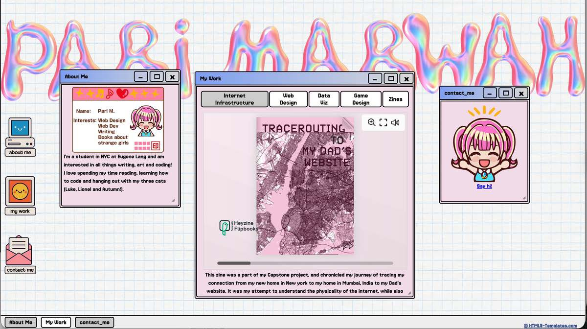
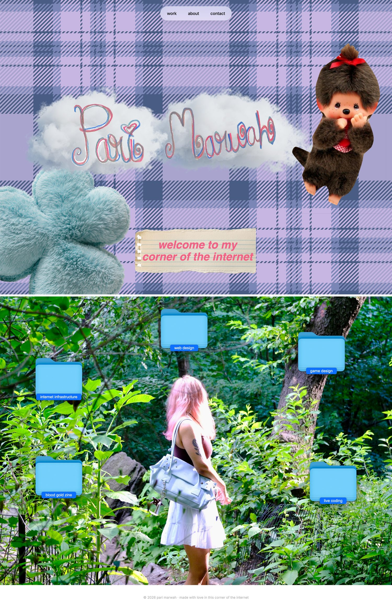
the new school free press i helped ideate, prototype and implement the newspaper's new website design & identity.
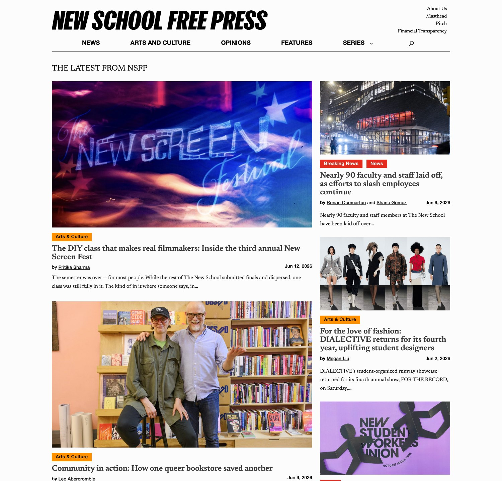
brown gold blood zine
my most personal project: a zine that delves into my roots as a south asian woman and explores the generational trauma many desi women carry.
use ← → keys or the arrows to turn the page
internet infrastructure
in my final semester i focused on the physicality of the internet around us which culminated in a zine tracing a connection from me in new york to my hometown, mumbai. i also ran a traceroute from new york to an indian government website, before and after a terrorist attack.
use ← → keys or the arrows to turn the page
live coding
my collaborator and i meshed the personal with the internet using the live-coding environment strudel and the console on wikipedia's 'diary' page by taking my diary entries and making them appear on screen while she mixed her voice reading them with music.
the piece mimics the crescendos of a panic attack: entries multiply until the wikipedia page disappears entirely, spinning to depict how off-kilter one feels at the peak and then slowly fades away.
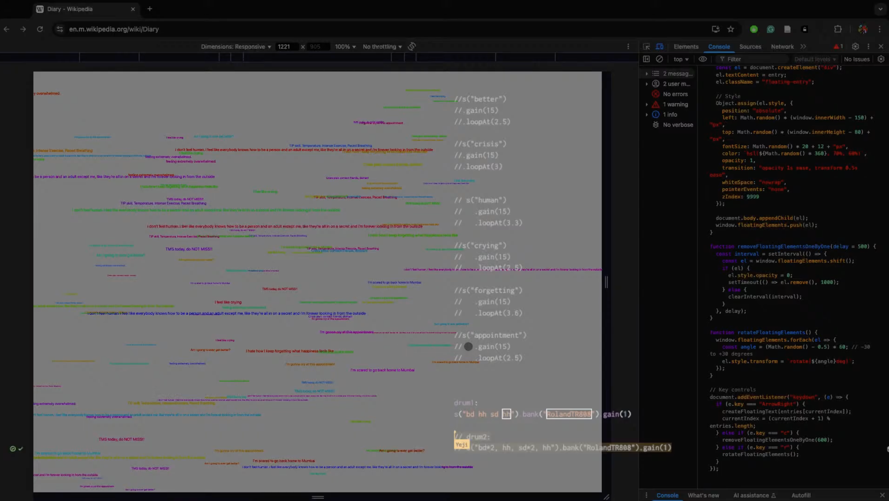

say hi 𓆟
i'd love to hear from you! for work, collabs, or just to say hi :3